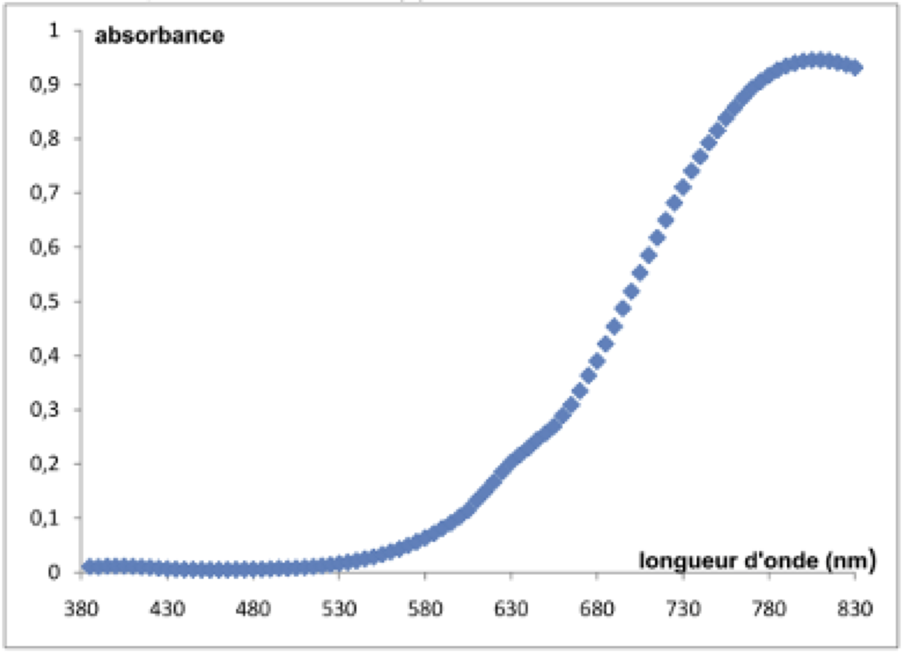
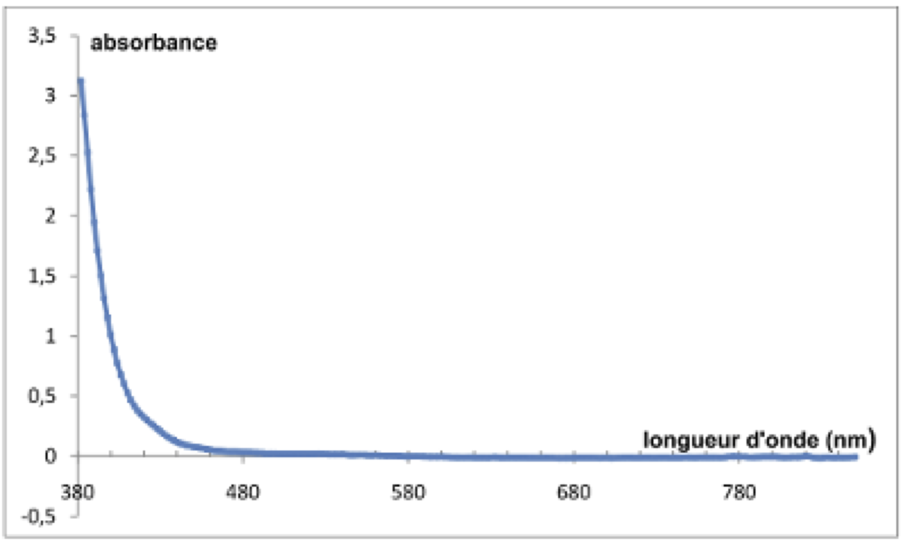

La pièce de 5 centimes d’euro est composée d’un centre en acier (constitué essentiellement de fer et de carbone) entouré de cuivre. Elle a un diamètre de $\pu{21,25 mm}$, une épaisseur de $\pu{1,67 mm}$ et une masse de $\pu{3,93 g}$.
On cherche par une méthode spectrophotométrique à déterminer la teneur en cuivre d’une telle pièce.
Le cuivre, de masse molaire $\pu{63,5 g.mol-1}$, est un métal qui peut être totalement oxydé en ions cuivre (II) par un oxydant puissant tel que l’acide nitrique selon la réaction d’équation :
$$
\ce{3 Cu(s) + 8 H^+(aq) + 2 NO3^-(aq) -> 3 Cu^{2+}(aq) + 4 H2O(l) + 2 NO(g)}
$$
Les ions cuivre (II) formés se retrouvent intégralement dissous en solution ; le monoxyde d’azote $\ce{NO}$ est un gaz peu soluble dans l’eau.
En pratique, on dépose une pièce de 5 centimes dans un erlenmeyer de $\pu{100 mL}$, on place cet erlenmeyer sous la hotte et on met en fonctionnement la ventilation. Équipé de gants et de lunettes de protection, on verse dans l’erlenmeyer $\pu{20 mL}$ d’une solution d’acide nitrique d’une concentration environ égale à $\pu{7 mol.L-1}$.
La pièce est alors assez vite oxydée et on obtient une solution notée $S_1$.
On transfère intégralement cette solution $S_1$ dans une fiole jaugée de $\pu{100 mL}$ et on complète cette dernière avec de l’eau distillée jusqu’au trait de jauge. On obtient une solution $S_2$ qui contient également des ions fer (III) provenant de la réaction entre l’acide nitrique et le fer contenu dans le centre d’acier de la pièce.
L’absorbance de la solution $S_2$ à $\pu{800 nm}$ est mesurée, elle vaut $A = \pu{0,575}$.
Étalonnage
-
Déterminer, en argumentant votre réponse, les couleurs attendues pour une solution d’ions cuivre(II) et pour une solution d’ions fer (III). Pour quelle raison choisit-on de travailler à une longueur d’onde de 800 nm ?
-
On fait subir à différents échantillons de métal cuivre pur le même traitement que celui décrit ci-dessus pour la pièce. On obtient alors des solutions d’ions cuivre (II) dont on mesure l’absorbance à 800 nm.
Montrer, en utilisant le document 2 et en complétant l’ANNEXE À RENDRE AVEC LA COPIE, que la loi de Beer-Lambert est vérifiée pour ces solutions d’ions cuivre (II).
Détermination de la teneur en cuivre dans la pièce
-
Déterminer la masse de cuivre contenue dans la pièce de 5 centimes d’euro.
-
En déduire la teneur (ou « pourcentage massique ») en cuivre dans la pièce.
Incertitude
10 groupes d’élèves ont déterminé expérimentalement la masse de cuivre présente dans 10 pièces de 5 centimes de même masse. Leurs résultats sont les suivants :
| Groupe | 1 | 2 | 3 | 4 | 5 | 6 | 7 | 8 | 9 | 10 |
|---|---|---|---|---|---|---|---|---|---|---|
| Masse de cuivre (mg) | 260 | 270 | 265 | 263 | 264 | 265 | 262 | 261 | 269 | 267 |
-
Déterminer, grâce aux valeurs trouvées par les élèves, l’incertitude élargie $U(m)$ (pour un niveau de confiance de 95 %) sur la mesure de la masse de cuivre dans une pièce.
-
En déduire l’intervalle dans lequel devrait se situer le résultat du mesurage de la masse de cuivre avec un niveau de confiance de 95 %.
Documents
Spectres d’absorption des ions cuivre (II) et fer (III) dans l’eau
On donne ci-dessous les spectres d’absorption d’une solution d’ions cuivre (II) et d’une solution d’ions fer (III), ainsi qu’un tableau reliant longueur d’onde d’absorption et couleur complémentaire. Le « blanc » a été fait avec de l’eau pure.
Solution aqueuse d’ions cuivre (II) $\ce{Cu^{2+}}$ de concentration $\pu{7,5e-3 mol.L-1}$.
Solution aqueuse d’ions fer (III) $\ce{Fe^{3+}}$ de concentration $\pu{5,0e-2 mol.L-1}$.
| Couleur absorbée | violet | bleu | vert | jaune | orange | Rouge |
|---|---|---|---|---|---|---|
| Longueur d’onde d’absorption (nm) | 400-424 | 424-491 | 491-575 | 575-585 | 585-647 | 647-850 |
| Couleur complémentaire | jaune-vert | jaune | pourpre | bleu | vert-bleu | bleu-vert |
Courbe d’étalonnage
Tableau donnant l’absorbance $A$ à $\pu{800 nm}$ de solutions aqueuses contenant des ions cuivre (II), obtenues à partir de divers échantillons de métal cuivre pur :
| Masse de l’échantillon de cuivre (mg) | 0 | 25,1 | 50,6 | 103,8 | 206,2 | 300,6 |
| Concentration ($\pu{mol.L-1}$) | $\pu{0,00}$ | $\pu{3,95e-3}$ | $\pu{7,97e-3}$ | $\pu{1,63e-2}$ | $\pu{3,25e-2}$ | $\pu{4,74e-2}$ |
| Absorbance | 0 | 0,055 | 0,121 | 0,231 | 0,452 | 0,649 |
Incertitude sur un mesurage
On rappelle les différentes formules intervenant dans la détermination de l‘incertitude sur le résultat du mesurage d’un ensemble de $n$ valeurs ${x_1, x_2, \ldots, x_n}$ :
- Écart-type : $\sigma_{n-1} = \sqrt{ \dfrac{ \sum_{i=1}^{n} (x_i - \bar{x})^2 }{ n-1 } }$
- Incertitude-type sur la moyenne : $ u(\bar{x}) = \dfrac{ \sigma_{n-1} }{ \sqrt{n} }$
- Incertitude élargie sur la moyenne : $ U(\bar{x}) = k\, u(\bar{x}) $ avec :
- $k = 1$ pour un niveau de confiance de 68 % ;
- $k = 2$ pour un niveau de confiance de 95 % ;
- $k = 3$ pour un niveau de confiance de 98 %.